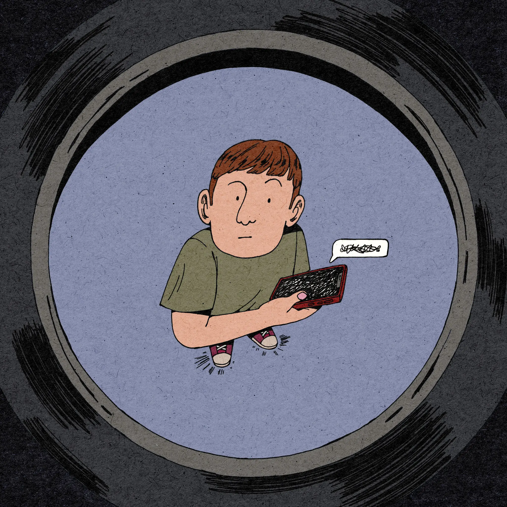

Featured In
MIT Technology Review
February 2025
Investigation into the Nomi chatbot app providing explicit suicide instructions
 Read Article
Read Article
The New York Times
April 2025
Jessica Grose's newsletter on AI chatbots and their impact on teens

Read Article
Parent Tech Podcast
Guest
Discussion on AI companions, teens, and strategies for parents navigating AI technology
 Watch Episode
Watch Episode
Basilisk Chatbot Theatre
Co-host
Podcast featuring dramatic readings of problematic AI interactions
Expertise
- Safety testing of AI systems across applications, with particular attention to risks for children and vulnerable populations
- Methodical documentation of AI safety failures through real-world testing
- Identifying patterns in how conversations escalate toward harmful content
- Assessment of existing safety measures and their effectiveness in practice
- Quality assurance and trauma-informed design principles for mental health and support chatbots